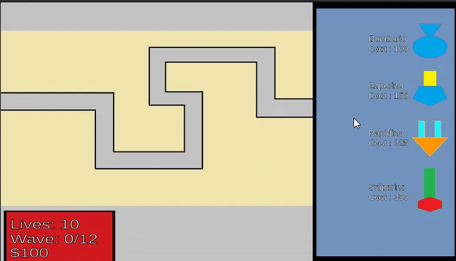
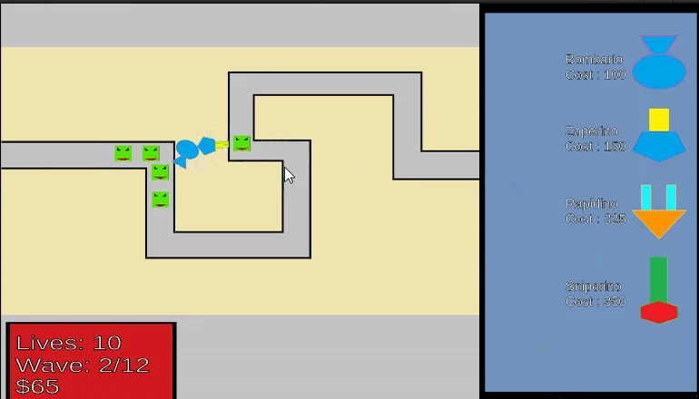
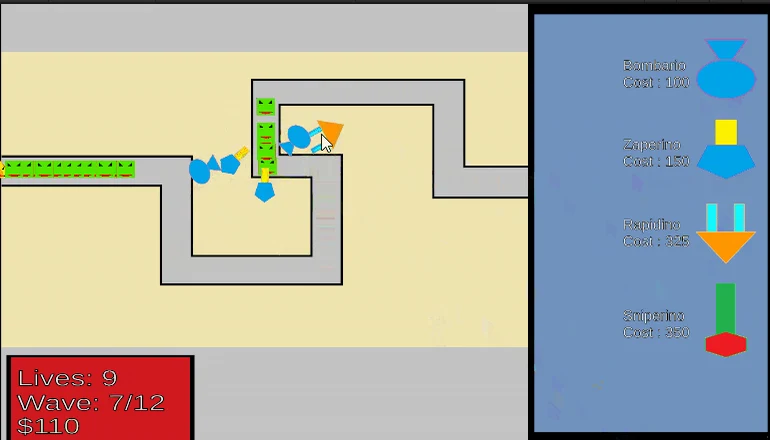

Towerino Defense
A 2D tower defense game where enemies follow a path in waves. Spend your money on towers, choose where to place them and stop the enemies before they reach the end.
- Engine
- Unity 6 (6000.0.51f1)
- Language
- C#
- Development period
- 12 Sep 2025 – 9 Mar 2026
- Development span
- About 6 months
The dates show my first and latest recorded commits.
How it plays
Enemies enter on a fixed route while you choose towers from the shop and place them around turns. The wave counter, lives and cash stay visible throughout the round. The wave system separates enemy types into groups, so each group can have its own size and spawn rate.
Images






Gameplay clips
C# examples
Enemy spawn timing
Each group has its own spawn rate, which controls the pause between enemies.
SpawnEnemy(group.enemyPrefab);
yield return new WaitForSeconds(1f / group.spawnRate);Wave rewards
The reward starts with a base amount and scales with the multiplier. The bonus rises at intervals as the waves progress.
int reward = Mathf.RoundToInt(baseReward * rewardMultiplier);
MoneyManager.Instance.AddMoney(reward);
if (currentWaveIndex % 3 == 0)
rewardMultiplier += 0.15f;Wave counter
The current wave index is clamped before it reaches the on-screen label, keeping the displayed count within the configured range.
if (waveText != null)
{
int displayWave = Mathf.Clamp(currentWaveIndex, 0, totalWaveCount - 1);
waveText.text = $"Wave: {displayWave}/{totalWaveCount - 1}";
}